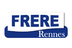
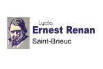

Marathon, Parcours, divers
Un parcours multifacettes


- Administration des sites internet
- Animation et suivi des opérations commerciales sur internet
- Mise en place et suivi de stratégies et objectifs de création de leads multicanaux
- Planification d’actions marketing
- Mise en place de formation à destination des différents commerciaux terrains sur nos différents canaux digitaux
- Création de supports d’aide à la vente à destination des commerciaux itinérants
- Mise en place du référencement SEO pour les sites internet de l’entreprise
- Mise en place du référencement SEA afin de générer des leads et des ventes
- Mise en place d’une veille des sites web concurrents
- Phoning clients
- Réalisation de devis clients
- Traitement et gestion des commandes clients
- Prospection dans un secteur géographique défini
- Négociation avec les clients

- Développement de l’activité de l’entreprise sur les marketplaces
- Administration du site internet : autopieces-online.fr
- Gestion, animation et mise à jour de contenu sur le site internet (marketing/promotion)
- Création de reportings sur l'activité des sites et des projets connexes
- Participation à l’évolution du groupe en étant force de proposition
- Négociation avec des fournisseurs étrangers
- Veille des tendances du marché
- Gestion des stocks et des références produits (5 000 références)
